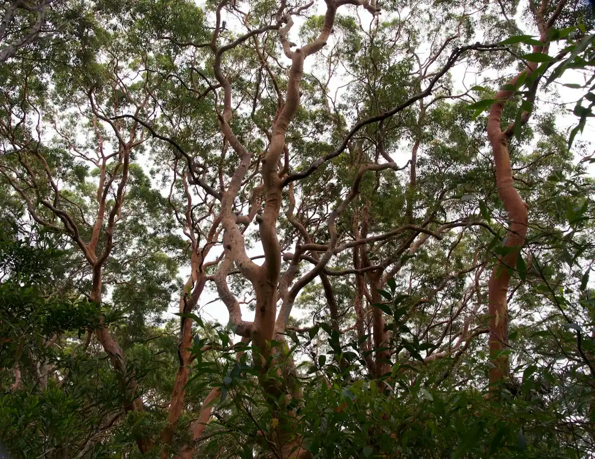

For homeowners comparing tree services sydney options, the useful starting point is not a suburb list, but the tree condition, access constraints, council position and written scope.
Tree Services Sydney Explained
Sydney Tree Services presents the work as a scoped property decision: removal, pruning, stump grinding, palm care, hedge trimming and arborist reports are each different jobs, even when they begin with the same tree. A useful enquiry describes the tree, the suburb or postcode, nearby structures, access for equipment, the wanted outcome and whether the stump needs to be dealt with.
The published guidance also makes council position part of the first conversation. Many Sydney councils require a permit or development consent before removing or heavily pruning protected trees under a Tree Preservation Order or Development Control Plan. The rules vary by local government area and can use DBH thresholds or protected species lists, so the practical question is whether the tree is protected before anyone approves work.
- Ask whether the quote separates removal, pruning, stump grinding and disposal.
- Tell the contractor about power lines, tight access, fences, pools, sheds or neighbouring property.
- Confirm whether an arborist report is needed for council, risk or development reasons.
- Check whether the proposed pruning is selective and aligned with AS 4373.
When Pruning Is A Better Question Than Removal
Removal is not the only decision path. The source page distinguishes selective pruning from indiscriminate cutting and says qualified arborists work to Australian Standard AS 4373 for pruning. That matters when the goal is clearance, canopy management, risk reduction or preserving a tree that still has a role on the property.
A property owner can make the first call more productive by describing the outcome rather than prescribing the cut. For example, explain whether branches are close to a roofline, whether light or access is the issue, or whether a report has been requested for development or council purposes. The contractor can then assess whether pruning, reporting, removal or another step fits the tree and site.
The page also contrasts a qualified arborist with a tree lopper. It says an arborist understands tree biology, risk and safe work practices, while tree lopping is generally used for indiscriminate cutting discouraged by modern arboriculture standards.
Council And Power Line Checks That Change The Job
Two issues can change a straightforward booking into a controlled job: protected tree status and electrical clearance. The guidance says council rules differ across Sydney local government areas, and that protected trees may sit under a Tree Preservation Order or Development Control Plan. Because the published page points to DBH thresholds and protected species lists, property owners should avoid assuming a neighbour's approval pathway applies to their own block.
Power lines require the same early disclosure. The source page states that tree work near power lines in NSW must follow SafeWork NSW and the relevant electricity network distributor minimum approach distances, and that only trained, authorised operators may work closer than the prescribed distance. A quote request should therefore mention overhead wires, service lines and any visible clearance issue before the site visit.
For a narrower removal-specific overview, this related guide to Sydney tree removal decisions is a useful companion when the question has moved beyond pruning or reporting.
What A Written Quote Should Clarify
The source page repeatedly points to written quotes before work starts. That quote should do more than state a total. It should set out what is included, what is excluded, timing, disposal details and whether stump grinding is part of the job. If the tree is large, near buildings or close to power lines, the quote should make the scope especially clear because those factors are named as cost drivers.
Price guidance on the page is indicative, not a binding offer. It says typical residential tree removal in Sydney in 2026 ranges from around $800 for a small accessible tree to $6,000 or more for a large tree near buildings or power lines. The exact figure depends on tree size, species, access and whether stump grinding is included.
- Request an itemised written quote before approving the work.
- Ask whether the price includes disposal and site clean-up.
- Separate pruning, stump grinding and arborist reporting where they are optional.
- Confirm what happens if council approval or extra access planning is required.
Who This Applies To
This guide is for Sydney property owners who already know a tree needs attention but have not yet settled the correct service. It suits homeowners dealing with a single hazardous limb, owners planning a broader site clearance, people asked for an arborist report, and anyone comparing pruning with removal.
It is also relevant when the tree sits in a sensitive position. The source page names buildings, power lines, access and council requirements as factors that influence scoping. In those cases, a short phone description rarely gives enough detail. Photos, location notes, access information and the intended outcome make the first site visit more useful.
The Sydney coverage described by the provider spans regions including the North Shore, Northern Beaches, Eastern Suburbs, Inner West, Hills District, Western Sydney and Sutherland Shire. Treat those place names as coverage signals, then bring the conversation back to the actual tree, site conditions and council pathway.
- Describe The Site. Record the tree location, access limits, nearby structures, power lines and the outcome you want before requesting a quote.
- Check Council Position. Ask the relevant council whether a Tree Preservation Order or Development Control Plan affects removal or heavy pruning.
- Request Written Scope. Get an itemised written quote that separates removal, pruning, stump grinding, disposal and reporting where relevant.
- Confirm Standards. For pruning, ask whether the contractor works to Australian Standard AS 4373 and uses qualified arborists.
| Situation | Likely service path | Question to ask |
|---|---|---|
| Overgrown branches but the tree may stay | Selective pruning | Will the work follow AS 4373? |
| Tree removal is being considered | Removal quote and council check | Is the tree protected by council rules? |
| Stump remains after removal | Stump grinding | Is grinding included or priced separately? |
| Council, risk or development issue | Arborist report | What information will the report address? |
| Branches near power lines | Authorised assessment | Are minimum approach distances relevant? |
This guide covers Sydney tree pruning, removal, stump grinding, council checks, power line questions and written quote preparation.